Префектура Нагасаки · Сасэбо и Сайкай · еда
Сасэбо и Сайкай на вкус: ставрида из рыбного порта, обержи в лесу и рынок в бомбоубежище
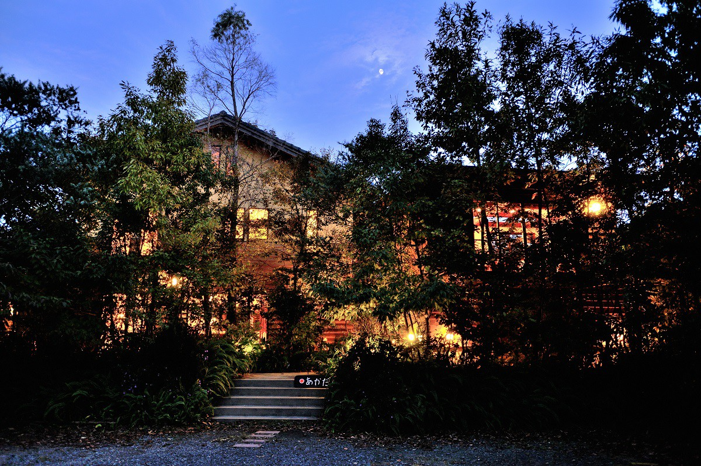
В префектуре Нагасаки больше островов, чем где-либо в Японии, и её кухня выросла из богатого моря и столетий заморской торговли. Писатель, автор книг о Киото и путевых эссе, проехал по северу префектуры и нашёл здесь еду, которой не ждал.
Сасэбо
Лучшая ставрида в кляре нашлась в рыбном порту
Еда занимает в путешествии едва ли не главное место. Когда пробуешь то, что можно съесть только на месте, понимаешь, что приехал не зря. Обычно такие блюда известны заранее: собираясь в Нагасаки, сразу вспоминаешь сара-удон и чампон, а для торжественного случая сиппоку, нагасакский праздничный стол. Ожидаемое тоже радует, но неожиданная находка делает поездку вдвое и втрое интереснее.
Для писателя такой находкой стала ставрида в кляре в «Моттаинай сёкудо», столовой на рыбном рынке Сасэбо. Сасэбо это портовый город на северо-западе префектуры, и рынок стоит прямо у рыболовной гавани.
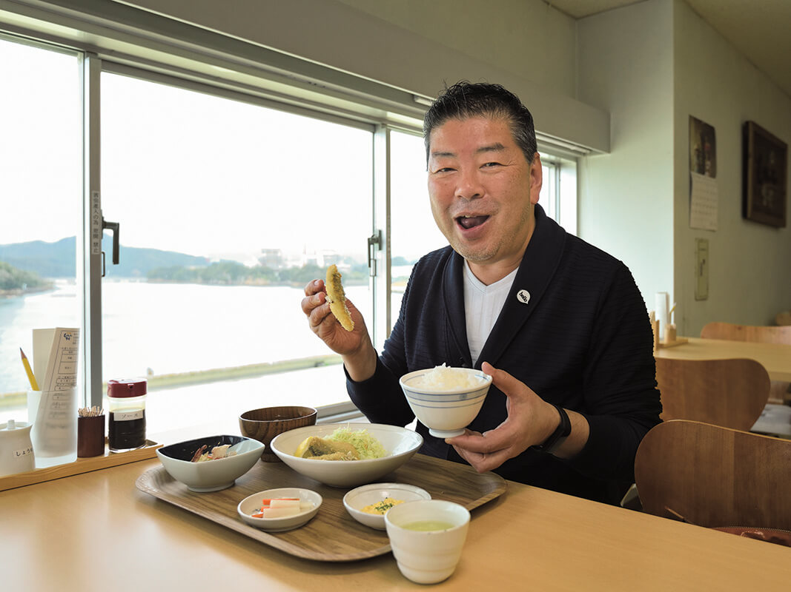
Ставриду в кляре он любит и судит о ней строго. Он вырос в Киото и перепробовал её по всей стране, но по-настоящему удачная попадалась редко. И вот, прожив почти семьдесят лет, он встретил идеальную ставриду в столовой Сасэбо.
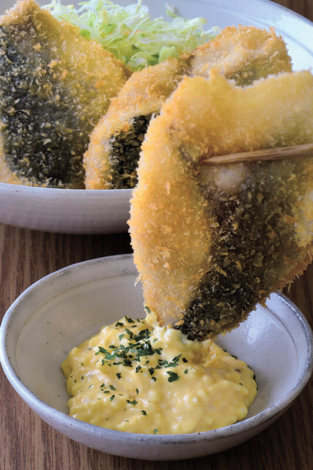
Обычно для этого блюда берут небольшую рыбу и раскрывают её целиком. Здесь жарят крупные куски большой ставриды, поэтому они толстые и сытные. Рыба такая свежая, что её можно было бы есть сырой, и вкус у неё получается редкий.
С этого обеда началось путешествие, в котором ожидаемое и неожиданное всё время переплетались.
«Моттаинай сёкудо»
- Адрес
- префектура Нагасаки, Сасэбо, Аиура-мати, 1563, рыбный рынок Сасэбо, рыночный корпус, 3-й этаж
- Телефон
- +81 956-48-8455
- Часы работы
- 7:00–14:00 (последний заказ в 13:30)
- Выходные
- дни, когда не работает рынок
Обержи
Auberge Akadama: три домика в лесу на острове
Обержи называют ресторан, при котором можно переночевать. Auberge Akadama стоит в городе Сайкай, в районе Осима, на острове Тэрасима. Островов с названием Осима в Японии много, есть такой и в Нагасаки. Сюда не нужно лететь или плыть на пароме: до островов ведёт мост. И всё же воздух на острове, как всегда, другой.
От аэропорта Нагасаки дорога идёт на север вдоль моря, мимо тематического парка Huis Ten Bosch. Как только машина въезжает на большой мост Осима-Охаси, появляется ощущение острова. Это вантовый мост над заливом Гото-нада: белые опоры на фоне синего моря похожи на белых цапель, которые смотрят в небо. Дорога пересекает Тэрасиму, и почти сразу от неё отходит тропинка к гостинице. Даже если сбросить скорость и внимательно смотреть по сторонам, её легко проехать: обержи прячется в густом лесу.
Раньше здесь был ресторан, а ещё раньше столовая, поэтому кухней это место славилось задолго до того, как стало гостиницей. Регистрация проходит в здании ресторана. Кроме него и домиков для гостей здесь есть только гостиная с библиотекой. Хозяин сам шеф-повар и сам закупает свежие морепродукты, а гостей встречают он и его жена. Неудивительно, что сюда издалека возвращаются знатоки.
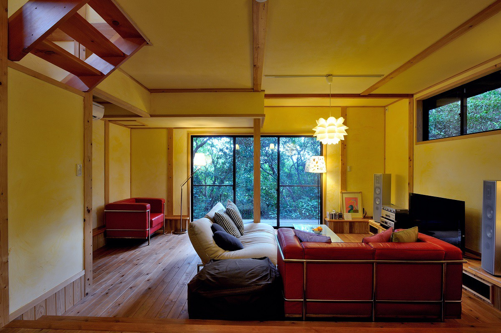
Номеров всего три, и каждый это отдельный домик, просторный и удобный. Писатель выбрал двухэтажный тип B с джакузи. На первом этаже большая гостиная, на втором спальня, терраса для загара и ванная. С террасы море видно сквозь зелень.
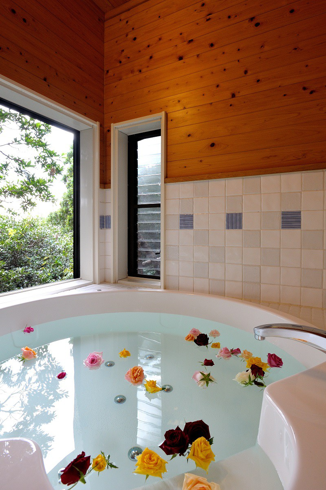
Открытая панорама моря здесь трогает меньше, чем солнечные блики на воде между деревьями. Можно лечь на дневную кушетку и почитать: для обержи это самое правильное занятие.
Auberge Akadama
- Адрес
- префектура Нагасаки, Сайкай, Осима-тё, Тэрасима, 1383-4
- Телефон
- +81 959-34-2003
- Номера
- 3 отдельных домика, в каждом своя ванная, онсэна нет
- Заезд / выезд
- 15:00 / 10:00
- Цены / Вход
- ночь с ужином и завтраком от 22 000 иен без налога и сервисного сбора
- Как добраться
- на машине 45 минут от съезда Сасэбо-Дайто скоростной дороги Ниси-Кюсю через дорогу Сайкай Пёрл Лайн; 45 минут на машине от станции JR Сасэбо; от порта Осима, куда из порта Сасэбо 25 минут на судне, есть трансфер по предварительной записи
Ужин: море на тарелке
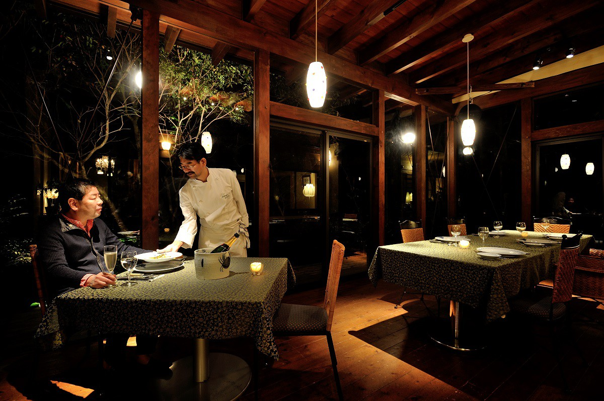
В ресторане посреди густого леса чувствуешь себя как в гостинице в горах. Но стоит принести еду, и становится ясно, что это всё-таки островная гостиница. В этом равновесии и состоит главная прелесть места. За столиком среди аккуратно подсвеченных деревьев одно за другим подают французские блюда из рыбы и моллюсков из окрестных вод.
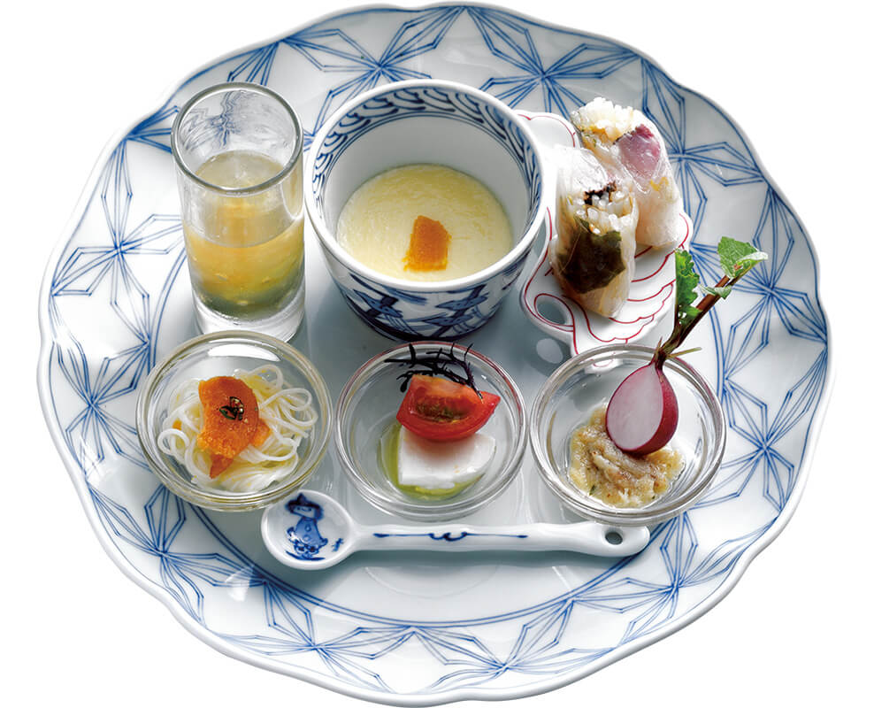
После аперитива подают закуску, и красотой она напоминает хассун, блюдо ассорти из японской кухни. Карпаччо едят как сасими: восемь видов сырой рыбы, и каждая чем дольше жуёшь, тем слаще, с чистым запахом моря. Главное же отдельное блюдо: лангуст, морское ушко, сазэ (рогатая улитка), тигровая фугу и морской ёрш окодзэ. Настоящая шкатулка с морскими сокровищами.
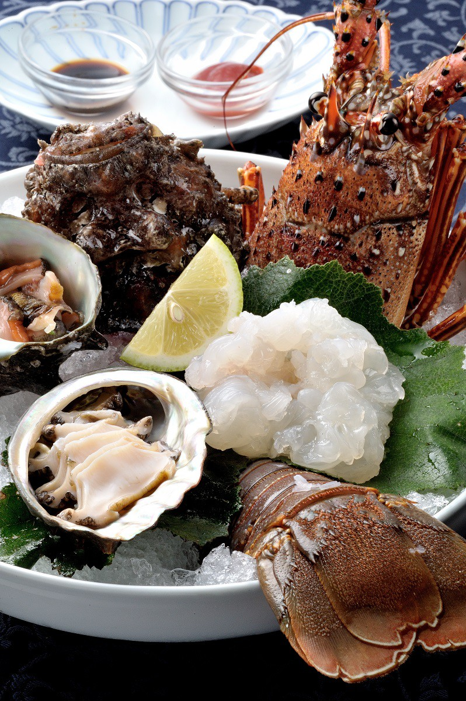
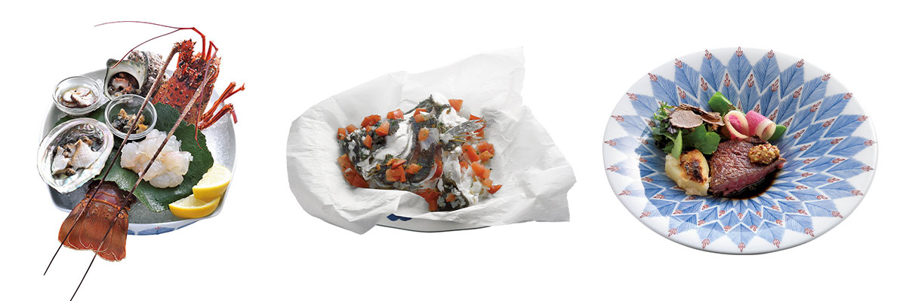
Кроме морепродуктов на ужин подают свежую фуа-гра, иберийскую свинину и нагасакскую говядину, так что название обержи оправдано полностью.
Писатель останавливался здесь и раньше, и уже тогда разнообразие свежих морепродуктов его впечатлило. На этот раз кухня стала ещё тоньше.
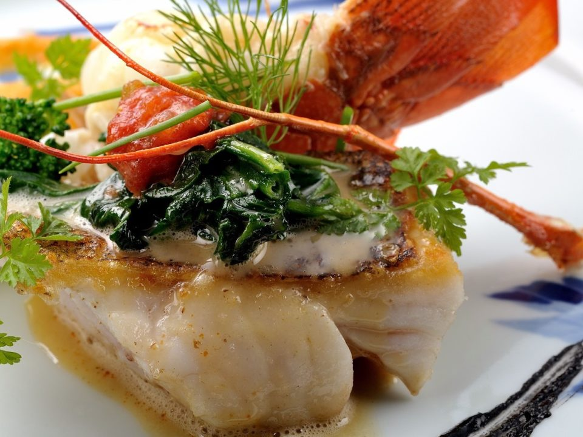
В Японии, окружённой морем, многие места гордятся своими морепродуктами, но Нагасаки, по мнению писателя, стоит особняком. Здесь не продают одну свежесть и не хвастаются сложной техникой. Человек вмешивается ровно настолько, насколько нужно, и продукт с приготовлением оказываются в равновесии. Может быть, дело в изрезанном бухтами побережье и множестве больших и малых островов, но, похоже, не только в этом.
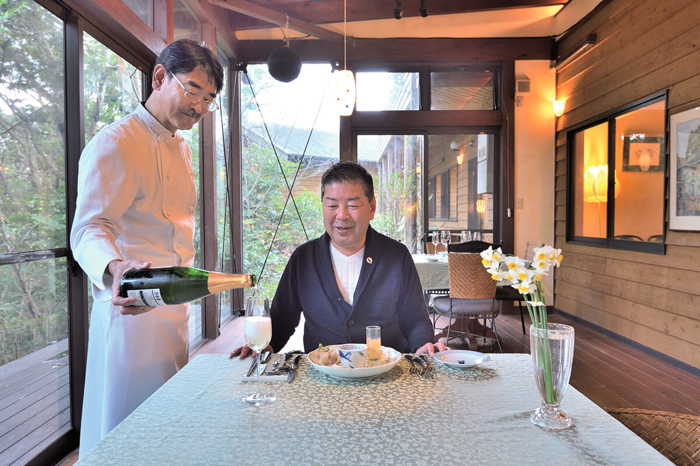
Утром удовольствие продолжается: на завтрак морепродукты и только что испечённый хлеб. Завтрак не уступает ужину, и после него обед вполне можно пропустить. Поэтому днём писатель отправился гулять по Сасэбо налегке.
Тоннэру-ёкотё
Рынок в бывшем бомбоубежище
Рынок в квартале Тоо кормит Сасэбо с эпохи Тайсё (1912–1926). Самая необычная его часть это Тоннэру-ёкотё, «туннельный ряд»: лавки устроены прямо в бомбоубежищах, вырытых во время войны. Потолки низкие, проходы узкие, но именно это и создаёт атмосферу. Слово «хаос» к этому лабиринту подходит как нельзя лучше. Здесь есть лавка с одэном и винный бар, где пьют стоя, и в каждом заведении путешественнику рады. Обычно такие убежища сносят, а здесь их оставили, и, может быть, поэтому ряд кажется таким домашним.
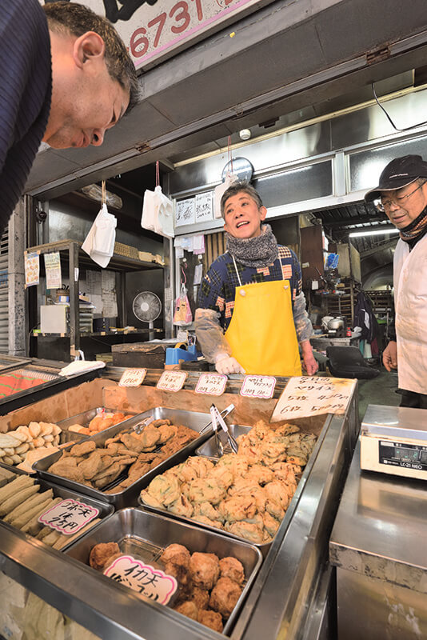
Здесь писатель понял, что в Нагасаки умеют пользоваться тем, что рядом и что было всегда. Замечать дары, которые под рукой, не добавлять лишнего, но и не жалеть труда: так и сложились нынешняя кухня и гостеприимство Нагасаки.
«Хонда камабоко-тэн»
- Адрес
- префектура Нагасаки, Сасэбо, Тоо-мати, 5-31
- Телефон
- +81 956-22-6731
- Часы работы
- 8:30–18:30
- Выходные
- воскресенье
«Ёнкэнмэ сёкудо»
- Адрес
- префектура Нагасаки, Сасэбо, Тоо-мати, 5-25
- Телефон
- +81 956-24-2535
- Часы работы
- 15:00–22:30
- Выходные
- воскресенье и понедельник
«Натюр»
- Адрес
- префектура Нагасаки, Сасэбо, Тоо-мати, 5-25
- Телефон
- +81 956-37-8990
- Часы работы
- 15:00–22:00, в пятницу и субботу до 24:00
- Выходные
- воскресенье и понедельник, бывают нерегулярные выходные
Сувениры
Что увезти из Нагасаки
У префектуры есть свои знаки качества для местных продуктов. «Нагасаки таварамоно» это сушёные и солёные морепродукты и рыбные изделия, которые прошли строгий отбор по правилам префектуры. Название пошло с конца XVII века, когда порт Нагасаки был крупным торговым узлом и морепродукты отправляли в другие края упакованными в соломенные мешки, тавара. «Нагасаки сики-батакэ» это марка продуктов из местного урожая: овощей, мяса и другого, отобранных за вкус и связь с Нагасаки.
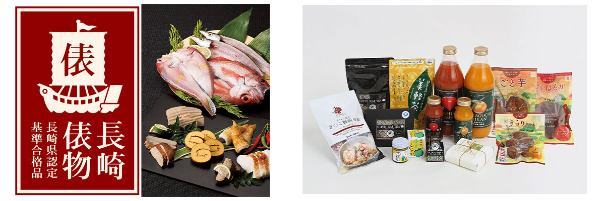
Удон Гото, тянутую вручную лапшу с островов Гото, по преданию делают больше тысячи лет. Только что сваренную, её макают в бульон из летучей рыбы аго или в сырое яйцо с соевым соусом. Есть и тянутая вручную сомэн из Симабары с историей около 350 лет. «Нагасаки канкоро-моти» это сладость из батата, клейкого риса и сахара. Её родина Гото, где когда-то много выращивали батат, и есть её можно сразу или слегка поджарив. Остров Ики считают родиной ячменного сётю: «Ики сётю» делают по старой формуле, две части ячменя на одну часть рисового кодзи, и у этого напитка есть географическое указание, признанное ВТО.
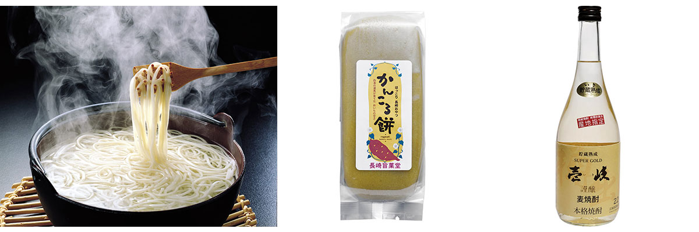
Фото: Ко Миядзи.